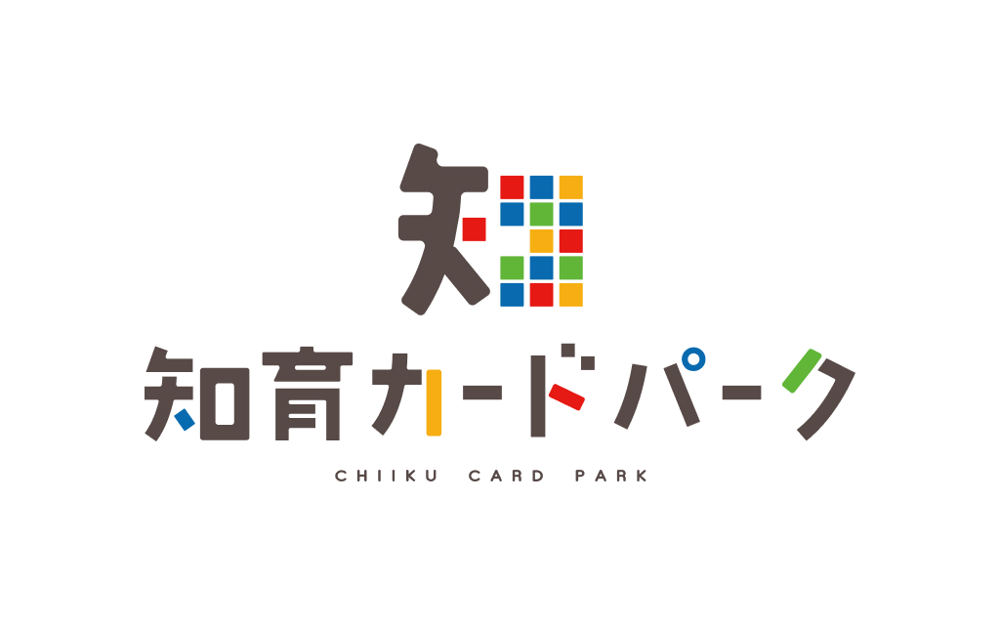
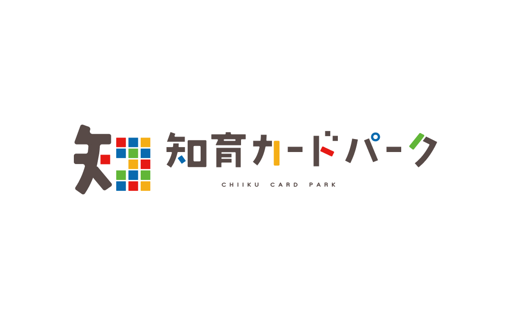

知育カードパーク
制作概要
「知育カードパーク」様のサイトロゴデザイン制作。
カードゲームをイメージさせる親しみやすいデザインを意識しました。
- デザイン
-
- ビジュアルコンセプト：親しみやすさとカードの手軽さを表現したデザイン。
- カラー：サイトのトーン＆マナーに合わせた配色。
- 担当範囲・ツール
-
- 担当：デザインのみ（ロゴ制作）
- 使用ツール：Illustrator
学び
- ・ターゲット（知育・子供向け）やサイトの目的に適したトーン＆マナーの重要性を学んだ
- ・ロゴ単体での視認性と、Webサイト上に配置した際のバランス調整力が向上した
